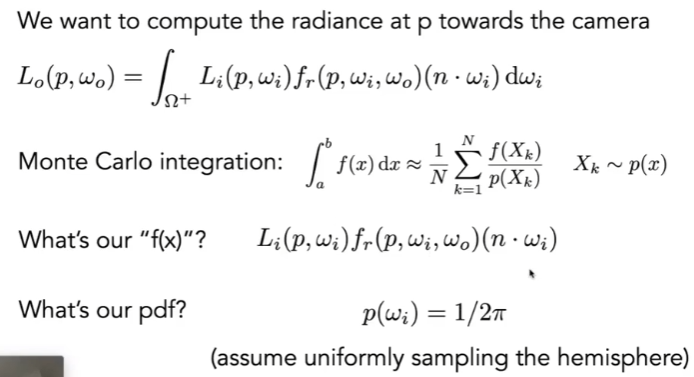

GAMES 101 L16-Ray Tracing 4 (Monte Carlo Path Tracing)
Monte Carlo Integration
Why: we want to solve an integral (definite integral 定积分), but it can be too difficultto solve analytically.
PS: Indefinite Integral and Definite Integral
- Definite integral:
- It computes the net area under a curve between two specific limits (boundaries).
- Notation: , where a and b are the lower and upper limits of integration.
- The result is a numerical value representing the total accumulation (e.g., area under the curve) between a and b.
- Indefinite integral:
- An indefinite integral represents a family of antiderivative functions of a given function.
- Notation: , without limits of integration.
- The result is a function, plus a constant of integration C, since antiderivatives differ by a constant.
- Relationship:
- A definite integral can be evaluated using an indefinite integral by applying the Fundamental Theorem of Calculus: , where F(x) is the indefinite integral (antiderivative) of f(x).
What & How: estimate the integral of a function by averaging random samples of the function’s value.
Basic Idea:
Instead of calculating the exact area under a curve or in a multidimensional space, randomly sample points within a domain.
Use the fraction of points that “fall under the curve” to estimate the integral.
Path Tracing (路径追踪)
Whitted-style ray tracing
- Always perform specular reflections /refractions
- Stop bouncing at difuse surfaces
Problems
- Where should the ray be reflected for glossy materials (different from mirror materials)?
- No reflections between diffuse materials? (See the figurer below, with global illumination, the left side of the taller box looks red because of the red wall, which is called color bleeding)
Now we know that Whitted-style ray tracing is wrong, but the rendering equation is correct. The next problem is how to calculate a definite integral over the hemisphere and perform the recursive execution.
A Simple Monte Carlo Solution
Here, we temporarily ignore the emitted radiance term in the rendering equaiton. Here, because the solid angle corresponding to a sphere is 4pi and the solid angle corresponding to a hemisphere is 2pi.

And thus, we can get a correct shading algorithm for direct illumination, as shown in the figure below. Here, BRDF is related to surface materials and lighting conditions, we can consider them as constants.
1 | |
One more step, if a ray hits an object Q, Q will also reflects light to Point P. We can consider it as computing the direct illumination at Q. Therefore, we can get an algorithm for global illumination by simply adding a branch to the algorithm above. Here, we use -wi in shade(q, -wi) because we assume all directions are outward by default.
1 | |
Problems and Solutions
However, we still have problems.
-
Explosion of the number of rays as the number of bounces goes up.
#rays = N^#bounces$
We notice that#raysincreases exponentially as#bouncesincreases. However, if N (sampling number in monte carlo integration) is equal to 1,#rayswon’t increase. So from now on, we always assume that only 1 ray is traced at each shading point:1
2
3
4
5
6
7
8
9
10shade(p, wo):
Randomly choose ONE directions wi~pdf
Lo = 0.0 # Total L at P
for each wi:
Trace a ray r(p, wi)
if ray r hit the light:
Lo += (1/N) * Li * fr * cosine / pdf(wi)
else If r hit an object at q:
Lo += (1/N) * shade(q, -wi) * fr * cosine / pdf(wi)
return LoWith N = 1, we have the path tracing (although there’s a lot of noise) (when N!=1 it’s called distributed ray tracing). Although it will be noisy with only one sampling, we can solve this problem by tracing more paths through each pixel and average their radiance (pseudocode as below).
1
2
3
4
5
6
7
8ray_generation(camPos, pixel):
Uniformly choose N sample positions within the pixel
pixel_radiance = 0.0
for each sample in the pixel:
Shoot a ray r(camPos,cam_to_sample)
if ray rhit the scene at p
pixel_radiance += 1 / N * shade(p, sample_to_cam)
return pixel radiance -
The recursive algorithm will never stop - we need a base case. The dilemma is that, in the real world the light does not stop bouncing indeed. Cutting
#bouncing== cutting energy.
To solve this, we use Russian Roulette (RR, 俄罗斯轮盘赌), which is all about probability.- With probability 0 < P < 1, you are fine
- With probability 1 - P, otherwise
Previously, we always shoot a ray at a shading point and get the shading result Lo.
Now suppose we manually set a probability P (0 < P < 1),
- with probability P, shoot a ray and return the shading result divided by P: Lo / P
- with probability 1-P, don’t shoot a ray and we’ll get 0
In this way, we can still expect to get Lo: E = P*(Lo/P) + (1-P)*0 = Lo
With RR, we get a correct path tracing method as the pseudocode below shows:
1 | |
- After 2., we have got a correct path tracing method, but it’s not that efficient. This is because if we uniformly sample the hemisphere at a shading point and emit a lot of rays from the point, most rays will be wasted (only a few hit the light source).
Monte Carlo methods allows any sampling methods, so we can sample the light rather than the shading point (therefore no rays are “wasted”).
Assume uniformly sampling on the light:
pdf = 1/A (because ).
But the rendering equation integrates on the solid angle: , and monte carlo integration requires “sample on x and integrate on x”. Therefore, we need to convert the rendering equation to an integration of dA rather than dw. See the figure below, think of scalene triangle (相似三角形) and the definition of solid angle. To build a relationship between dA and dw, we can imagine we have a unit sphere (r=1), on which dw (solid angle) is equal to the area corresponding to the solid angle on the sphere surface. Also imagine another sphere, whose r = ||x’-x||, and the corresponding area on the sphere surface is . In this case, and represents the same solid angle, and so we got the equation.
Then we can rewrite the rendering equation as follows. Now it’s an integration on the light.
Monte Carlo integration:
- “f(x)”: everything inside
- PDF = 1/A
Previously, we assume the light is “accidentally” shot by uniform hemisphere sampling. Now we consider the radiance coming from two parts:
- light source (direct, no need to have RR)
- other reflectors (indirect, RR)
Finally, the pseudocode is as follows.
1 | |
- One final thing: how do we know if the sample on the light is blocked or not? We can cast a ray from the shading point p to the sampling point x at the light source, and see if this ray is blocked.
1 | |
Now the path tracing is finally done!
A few further questions
- Uniformly sampling the hemisphere
- How? And in general, how to sample any function? (sampling)
- Monte Carlo integration allows arbitrary pdfs
- What’s the best choice? (importance sampling)
- Do random numbers matter?
- Yes! (low discrepancy sequences)
- I can sample the hemisphere and the light
- Can I combine them? Yes! (multiple importance sampling)
- The radiance of a pixel is the average of radiance on all paths passing through it
- Why? (pixel reconstruction filter)
- Is the radiance of a pixel the color of a pixel?
- No.(gamma correction, curves, color space)